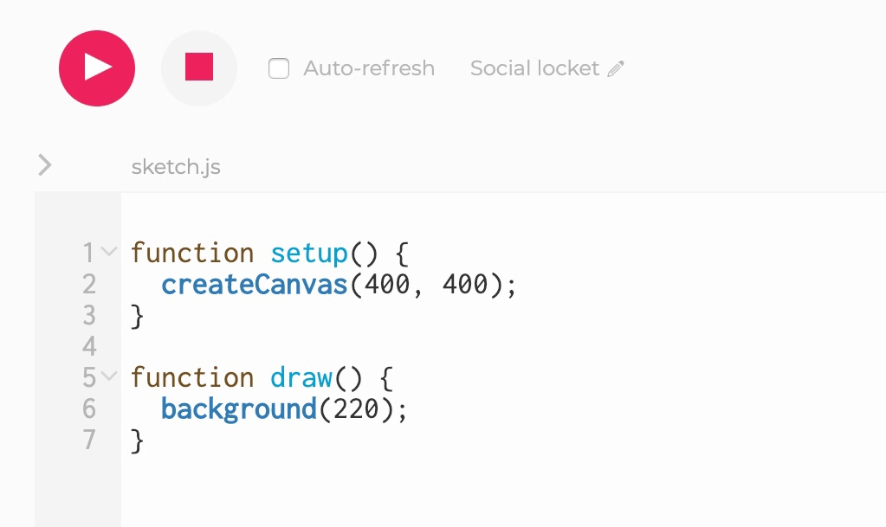
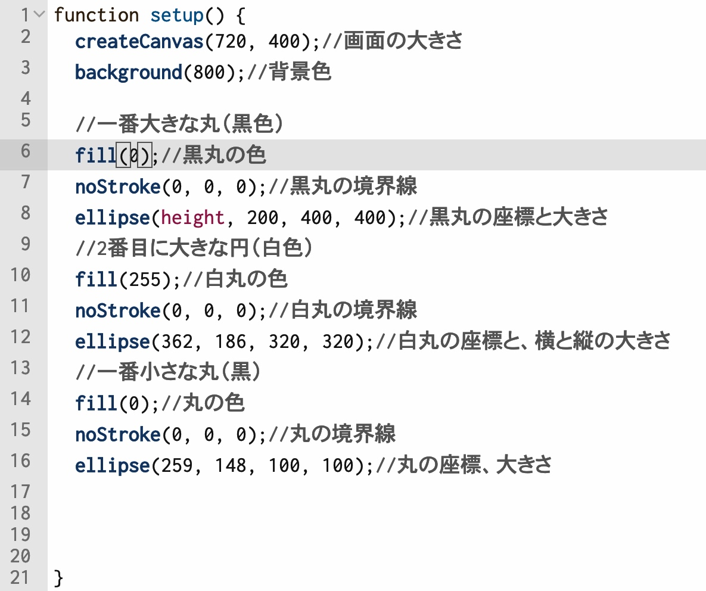
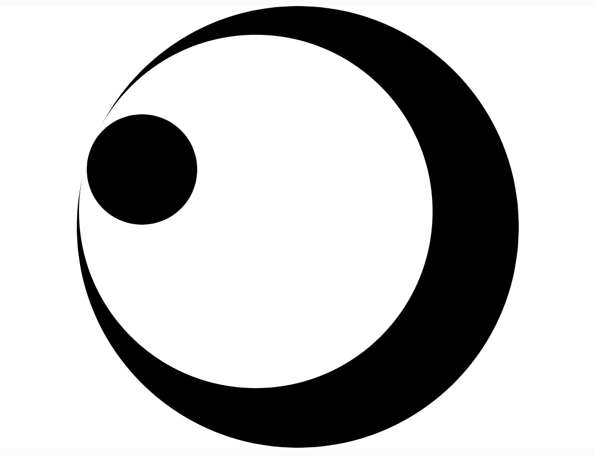
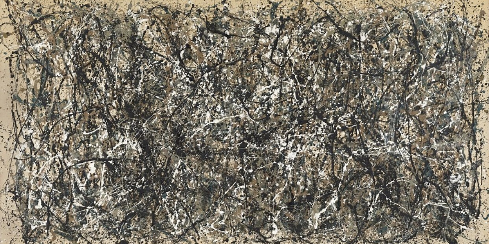
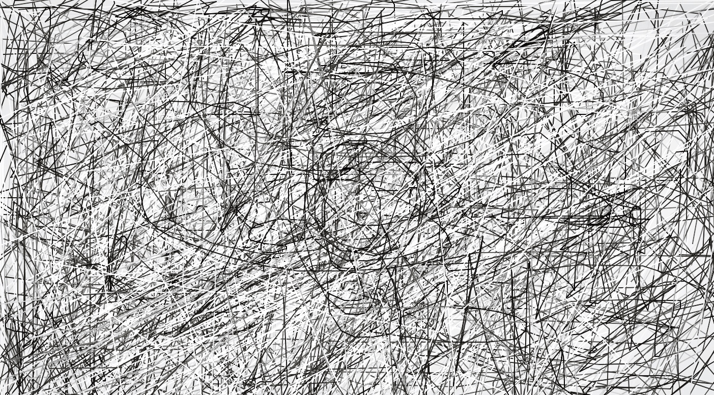
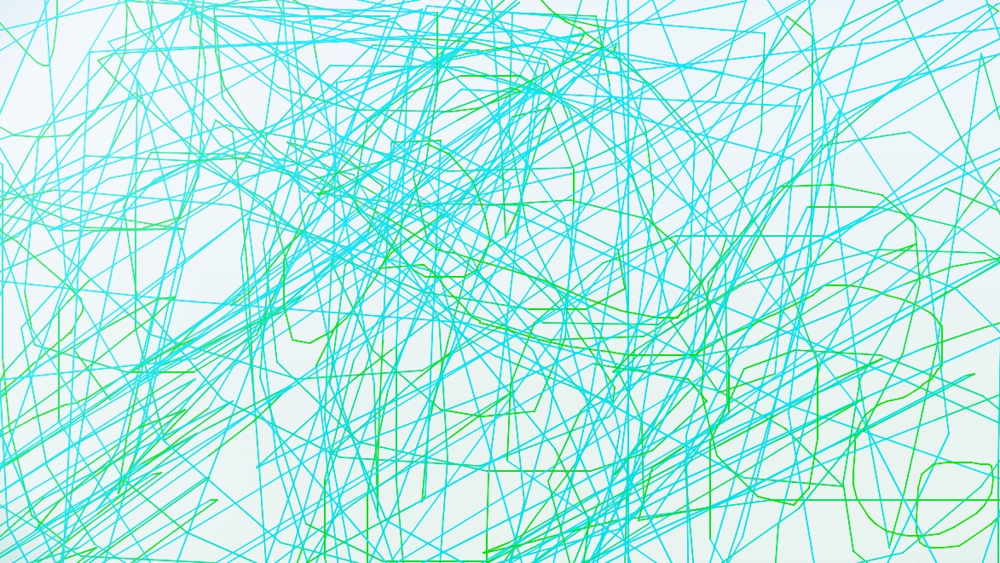
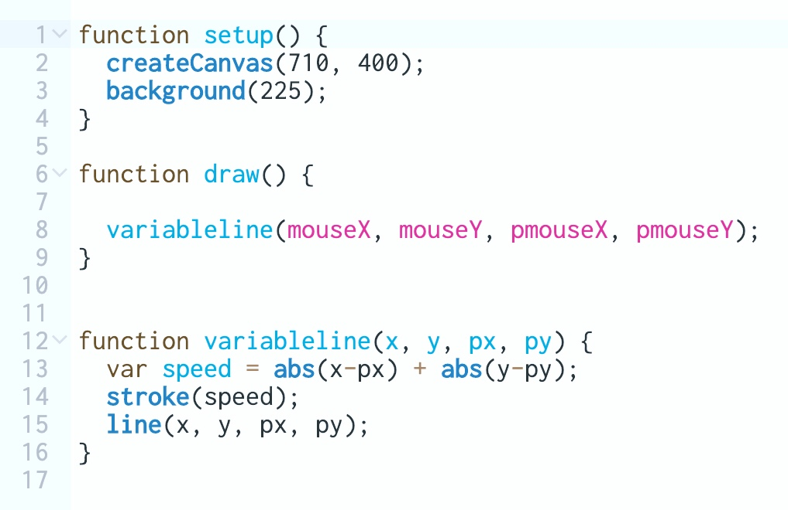

start p5.js
< Lecture contents >
2018/11/8 ~ 11/21
・1day, 11/8 [What's creativecodeing]
・2day, 11/16 [Start p5js!]
・3day, 11/21 [Review]
What's creativecodeing?
クリエイティブコーディングとは、「アート×テクノロジー」の領域で、具体的には「プログラミング」によって創造的な 表現を生み出すことがその領域に当たる。 機械的な表現ではあるが、必ずしも（大方）機能的ではなく、数値やコードによる「表現力」の創造が主な目的である。 メディアアート・インタラクティブアートの領域にも見られる。 現在では様々なプログラミング環境が存在し、用途や分野によって多様な表現を生み出せるが、専用のコードを理解しないことには 始まらない。今回の授業で取り扱った[P５.JS]はオープンソースのプログラミング環境であり、ライブラリーや使用方法などの環境の説明・使用例などが充実しているため、 初心者でも気軽に操作できる環境となっている。Start p5js

次に操作環境だが、上の写真のように、左側に「プログラミング（入力）」して、右側の画面に「出力」結果が表示されるようになっている。
基本的な使用を説明する。まず、左上の丸いピンクに三角模様は「スタートボタン」と「リセット」の役割がある。その隣、ピンクの四角模様は出力されたプログラムを「初期化」する。
次に、「スケッチ欄」に書かれた二つの関数についてだが、[function setup]は最初に読み込まれる関数。[function draw]というフレーム毎に読み込まれる「関数」を表す。
setup関数の下、[Creativ canvas]は出力される右画面の範囲の大きさを表している。
draw関数の下、[background]は出力画面の背景色を表している。（例えば黒は[数値：０]）
制作過程
授業ではいくつかの「日本の家紋」を練習作品として作った。この家紋は全て「丸の形」とその図形の「位置」関係で模様にすることができる。 この模様を、２つの黒い丸（大きな丸と小さな丸）、１つの白い丸に分ける。丸とその大きさ/座標の入力は[ellipse（数値）]で表す。[noStroke]は境界線。[fill]は丸の画面内での色を示すものだ。 コードでの表し方の説明は（//説明分）で、右の画像の通りである。 このように、プログラミングでは、形やパターン、図形と図形の相互関係性などを自分なりにとらえて、分解してみるなどすることによって、一つ一つの要素 を足し算できるようにしてかくことが必要になることがわかった。


Canvasreativecodeing / Art expression


これは「有名な絵画をp５.jsを使って模写する」という課題である。
だが、なぜか私は、最初、「自分のアパートを手書きで描いた」
それはおそらく、木下栄三の「描きたくなる！水彩スケッチ」を読んで自分の似たような情緒を表現したかったからだと思われる。

課題の趣旨と違うため、開き直って、別のものを作る。
「有名な絵画」のモチーフだが、「ジャクソン・ポロック」の[ワン：ナンバー31, 1950]を選んだ。理由はアクションペインティングの無意識で描かれたようで、何か深遠な観念を感じさせてくれるアートに興味があったからである。もしかしたら、「行為としてのアート」も無意識でおこなったとは言っても、プログラミングの変数のように、「計算された無意識」の営みであったのかもしれない。


プログラミングの説明だが、今回は「ひとかき」でラインのグラデーションを表現し、コントラストを作った。使用した変数は[randomLine/variableline]だ。
マウスの位置を（XとY）で表し、移動した位置を（pxとpy）とした。双方のパラメーターで、マウスを動かした（運動）のスピードをはかり、早く動かした時と、遅く動かした時とで、色に差が生ずる。
スピードが「変数」（変わる数）となるので、「[var]変数名」の変数名は[speed]とし、[＝]で値と結んだ。変数の計算は[mouseX]と[pmouseX]/[mouseY]と[pmouseY]にそれぞれ分け、[abs(x-px)/abs(y-py)]として二つを足して[abs(x-px)＋abs(y-py)]とし、その計算結果の値によってスピード値が決定される。
＊（p ＝ previous[前フレーム] / abs = absolute[絶対値]）[stroke]は色の値だが、何も入力しないと白〜黒の色間のグラデーションが「スピード値」によって変化する。
[speed]の変数を[stroke]入力し、スピード値によって色が変化する。値を入力して、カラーも調整できるが、モノクロが一番しっくりくる。自動ではなく、手動でマウスを動かし、表現。（チープだが、アクションペインティング風に少し似せることはできたと思う。）

最後に、自分の制作物を[OpenProcessing]という公開サイトにアップロードした。 ここでは、自分たちみたいな学生から、プロのクリエイターまで、様々な人達が制作したクリエイティブコーディングのプログラムをみることができる。 このようなオープンソース環境は開発環境にとって大きな学習の場として機能するだろう。自分たちがしっているプログラミング言語はごく僅かであるが、 これを参考に、どのような表現方法があるのか勉強してみるのも面白いと思った。
MY Work→